Prof. Dr.-Ing. Johannes Schildgen
johannes.schildgen@oth-regensburg.de
Data Warehousing
Chapter 6: Business Intelligence (BI)

Business Intelligence (BI)
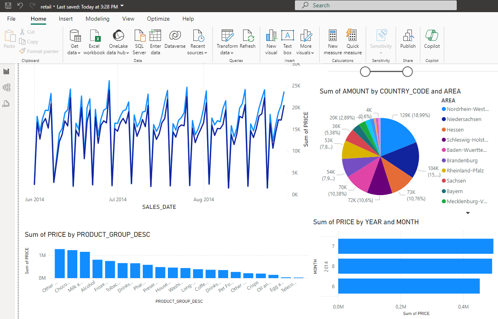
Strategies and technologies to access and analyze business information.
- reporting
- dashboard development
- data mining
- predictive analytics
- ...
⇒ support business decision-making
BI Tools:
- Tableau
- Microsoft Power BI
- Qlik
- MicroStrategy
- Pyramid
- Bissantz
- ...
Microsoft Power BI
BI tool for real-time data insights for both technical and non-technical users.
Features
- Data Connectivity: Connect to various data sources (databases, files, ...)
- Data Transformation: Data cleaning, shaping, and transformation
- Data Modelling: Complex data models, relationships between different data sources
- Interactive Reports: Various visualization types (charts, graphs, maps, ...)
- Dashboards: Combine multiple reports to a single dashboard; real-time updates
- Collaboration: Share dashboards and reports, embed reports in other applications
- AI: Integrate with AI tools, natural language queries, advanced analytics
Editions
- Power BI Desktop, Power BI Service (cloud), Power BI Mobile
- Free Version, Pro (paid per user), Premium (large-scale deployments)
Installation and Connection
Power BI Desktop for Windows
- Microsoft Store: Search for Power BI Desktop
- Chocolatey (Package Manager):
choco install powerbi - Login with Microsoft account optional
Connecting to a Data Source
File → New → Report
- Import Data (from file, cloud service, database, ...), store it in the report
- Direct Query: Queries are directly sent to the data source in real time when interacting with a report.
Connect Power BI to Exasol
- Get data from another source → Databases → Exasol
- Enter the connection string (IP address with fingerprint (copy from DBeaver))
- Choose Encrypted: Yes; and Direct Query
- Enter database username, and password
- Choose tables from schema
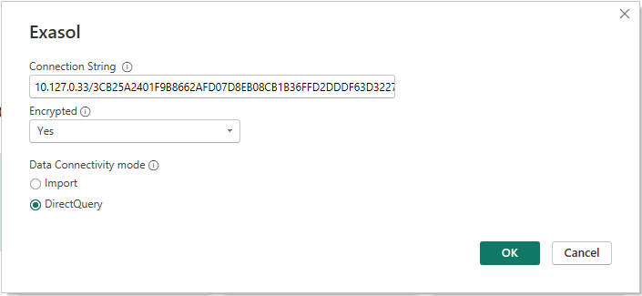
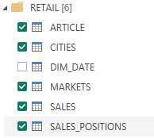
Model View
- Check columns and their data types
- Create relationships:
Drag foreign-key column to primary-key column - Cross-Filter Direction for relationships:
Allow filters from single table only or from both sides - Columns can be renamed, hidden, changed, ...
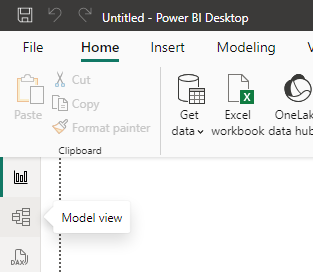
Dimension Hierarchies
Hierarchies
- If hierarchy attributes are across multiple tables, add new column to table:
COUNTRY_CODE = RELATED(CITIES[COUNTRY_CODE])- Right click on table → New hierarchy
- Add columns to the hierarchy (from coarse to fine)
Date Hierarchy
- Right click on table → Mark as date table
- The time-intelligence feature adds a date dimension to date tables.
- Alternative: Add DAY, MONTH, YEAR columns to table and create hierarchy:
YEAR = Year(SALES[SALES_DATE])- Alternative 2: Create date-dimension table (see next slide) and relationship
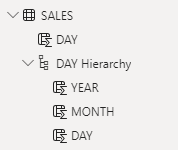
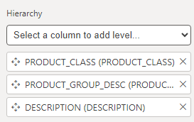
Date-Dimension Table
CREATE OR REPLACE TABLE DIM_DATE (
"DATE" DATE PRIMARY KEY, "YEAR" INT, "QUARTER" VARCHAR(2),
"MONTH_NAME" VARCHAR(20), "MONTH" INT,
"DAY" INT, "WEEKDAY" VARCHAR(20)
);INSERT INTO DIM_DATE ("DATE", "YEAR", "QUARTER", "MONTH_NAME",
"MONTH", "DAY", "WEEKDAY")
SELECT DISTINCT
sales_date AS "DATE",
year(sales_date) AS "YEAR",
CASE
WHEN MONTH(sales_date) IN (1, 2, 3) THEN 'Q1'
WHEN MONTH(sales_date) IN (4, 5, 6) THEN 'Q2'
WHEN MONTH(sales_date) IN (7, 8, 9) THEN 'Q3'
WHEN MONTH(sales_date) IN (10, 11, 12) THEN 'Q4'
END AS "QUARTER",
TO_CHAR(sales_date, 'Month') AS "MONTH_NAME",
month(sales_date) AS "MONTH",
day(sales_date) AS "DAY",
TO_CHAR(sales_date, 'Day') AS "WEEKDAY"
FROM retail.sales;Reports
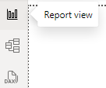
- To add a new visual, first make sure nothing is selected
- Choose visual: ...
- Drag columns to fields (e.g., x-axis, y-axis, color, size, ...)
- Format visual: Change colors, labels, axis, ...
- Use filters to limit data
- Use slicers to interactively filter data:
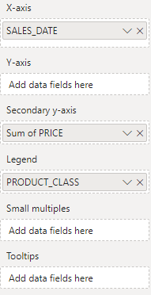
Hierarchies: Rollup and Drilldown
- Use hierarchy as x-axis to enable Hierarchical operations
- ↑ Rollup: Aggregate data to more coarse-granular levels of the hierarchy
- ↓ Drilldown Mode: When activated, clicking on element shows more detailed data
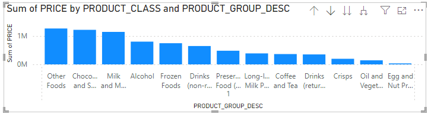
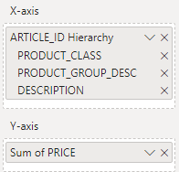
Maps / Geo Data
- Enable: Options → Global → Security → Use Map and Filled Map visuals
- Create Map (with bubbles or heat map) or Filled Map
- Provide geo data either from text column (city, country, ...) or lat/lon 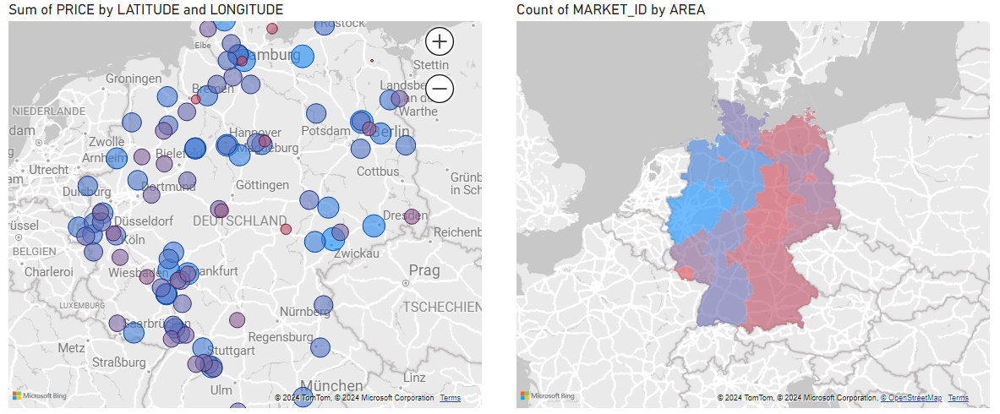